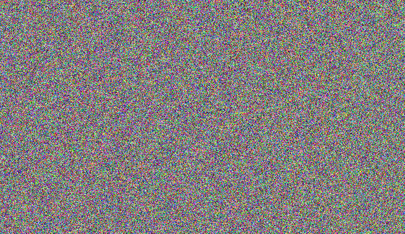
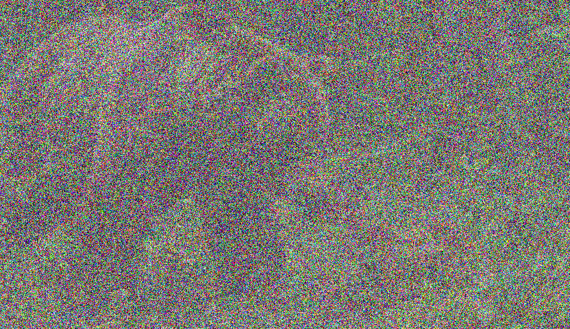
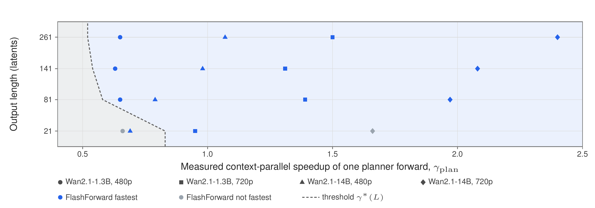
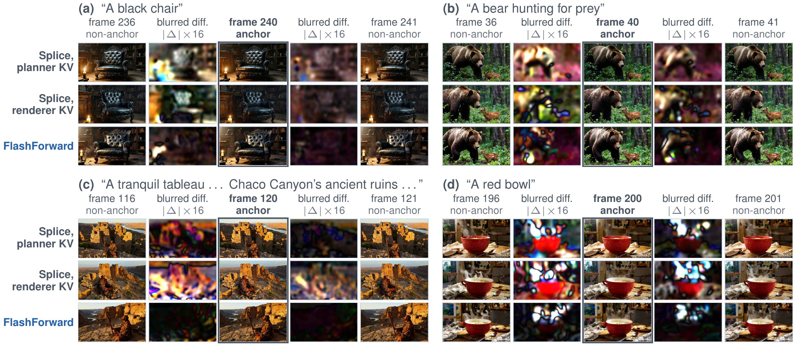
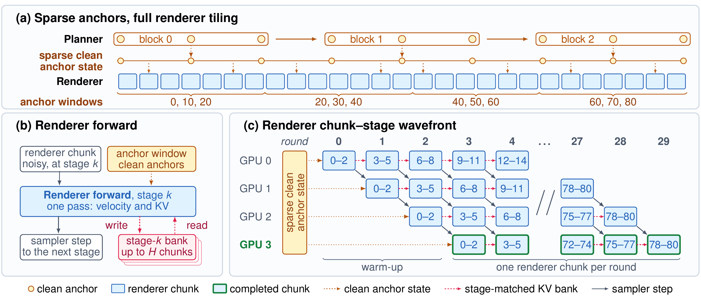
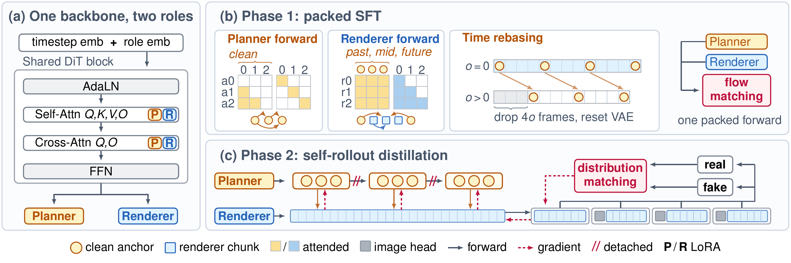
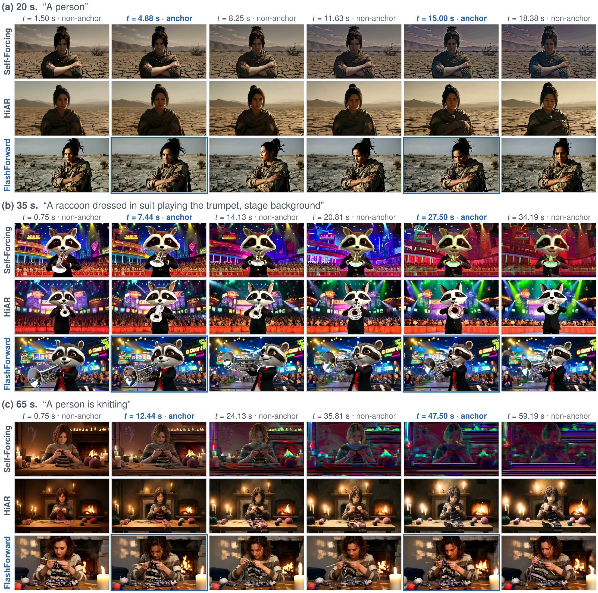

In-flight history
- dense: last 5 chunks
- noisy, looks back
- free with every forward
→ fine motion and appearance
In-Flight KV Cache with Clean Anchors for Faster Autoregressive Video Diffusion
1Meta · 2S-Lab, Nanyang Technological University
Every clip on this slide was generated by FlashForward
Denoising-path time, mean of 20 videos. Self-Forcing on 1 GPU: 57.89 s.
Bigger model,
higher resolution:
bigger gap.
Faster and
more stable.
How?
65 s video, 4 GPUs. FlashForward: faster of its two planner allocations. 14B: timing-only runs on GB300 with the same schedules.


1 forward = one pass through the network: our unit of cost
Forwards cost about the same, so the question is: which forwards make video?
1 chunk = 3 latent frames ≈ 0.75 s
4 denoising stages
each chunk =
4 forwards
Memory is not free: it is computed by running the network.
Which memory?How noisy?Ready when?
| Method | Memory is… | Ready when? | Memory-only forwards / chunk |
Chunks overlap |
|---|---|---|---|---|
| Self-Forcing | clean | after re-encoding | 1 | no |
| N-C-Causal-rCM | from the last stage | after the last stage | 0 | no |
| HiAR | a bit less noisy | after re-encoding, each stage | 4 | yes |
| ?FlashForward | ?same stage (in-flight) | ?right after each stage | 0 | yes |
We call this the cross-chunk state contract.
In-flight history only (4-step model)
Memory is noisy→ errors pile up
Memory only looks back→ nothing holds the future
→ fine motion and appearance
→ long-range structure
Each forward sees 21 latents: 3 anchor + 15 history + 3 current
Schematic: planner forwards split across 4 GPUs (context parallelism) are drawn 1.5× shorter than on one GPU (illustrative).
Schematic: a forward split across 4 GPUs is drawn 1.5× shorter than a one-GPU forward (illustrative).
Measured: 4 GPUs (1.3B: H100, 14B: GB300); FlashForward: faster of its two planner allocations; 14B: timing-only runs with the same schedules.
Splice: anchor frames copied into the output
Ours: renderer regenerates every frame
Watch for a pulse every 2.5 s
65 s video · each method's fastest setup, ≤ 4 GPUs (1.3B on H100; 14B on GB300, timing-only runs) · seconds, lower is better · bars scaled per panel
Mean of 20 videos · CP = context-parallel planner · 1 GPU = Self-Forcing's fastest setup at 1.3B · 480p
Speedup = HiAR latency / fastest FlashForward latency (4 GPUs) · limit = HiAR / FlashForward forward count at each length (212 / 123 at 20 s) · 14B: timing-only runs
Schematic: a 20 s video (3 anchor blocks, 27 chunks)
≈ 4.5× faster than real time (denoising only)
VBench Total (higher is better)
Autoregressive models: 20 s videos
5 s bidirectional: 5 s videos
VBench-1.0 · baseline scores from HiAR
VBench-Long · all four methods run under one protocol · 1.3B · 480p
| Renderer memory | VBench Total | Speed |
|---|---|---|
|
In-flight history only
|
failedflicker | fast |
|
Clean history + anchors
|
0.826 |
slow
extra forwards, like Self-Forcing
|
|
In-flight history + anchors (ours)
|
0.838 | fast |
VBench Total · all variants trained under the same setup
A playful raccoon dressed in a stylish black suit with a bright red bow tie, playing a shiny silver trumpet…
Watch the raccoon’s face and ears
Generation time: 1.3B · 480p · 4 × H100, mean of 20 videos · FlashForward: faster of its two planner allocations
CG game concept digital art, a person sitting at a wooden table, their hands meticulously knitting a cozy scarf…
played at 1.5×Generation time: 1.3B · 480p · 4 × H100, mean of 20 videos · FlashForward: faster of its two planner allocations
Short clips (5 s): planner and warm-up cost dominate
One GPU: no wavefront1.54–1.59× faster than HiAR · 1.9–4.2% slower than Self-Forcing (1.3B · 480p · 20–65 s)
Data: real-world videos only
Design: anchors fixed every 2.5 s, fixed window
yikai-wang.github.io/FlashForward
Memory is a contract: what it stores, how noisy it is,
when it’s ready.
Reuse in-flight KV: every renderer forward advances the video, and chunks flow as a wavefront.1.16–1.69× faster than HiAR · 1.42–2.92× faster than Self-Forcing
Sparse clean anchors fix drift at a second time scale.Best VBench Total (0.838) · flat from 20 s to 65 s
Speed: 20–65 s videos, up to 4 GPUs · VBench Total on 20 s videos · VBench-Long Total from 20 s to 65 s
Questions?
FlashForward
yikai-wang.github.io/FlashForward
| 480p · 1 GPU | 480p · 4 GPUs | 720p · 4 GPUs | ||||||||||
|---|---|---|---|---|---|---|---|---|---|---|---|---|
| Length | 5 s | 20 s | 35 s | 65 s | 5 s | 20 s | 35 s | 65 s | 5 s | 20 s | 35 s | 65 s |
| Bidirectional | 3.31 | 32.02 | 91.22 | 295.83 | 1.13 | 8.95 | 24.01 | 75.28 | 3.74 | 39.59 | 115.79 | 379.17 |
| Self-Forcing | 3.69 | 17.44 | 31.48 | 57.89 | 5.10 | 20.25 | 35.40 | 65.14 | 6.04 | 27.17 | 47.71 | 97.68 |
| HiAR | 5.57 | 27.86 | 50.41 | 94.74 | 2.06 | 7.67 | 13.31 | 24.67 | 6.49 | 26.82 | 46.94 | 86.85 |
| FlashForward | 4.56 | 17.77 | 32.80 | 59.64 | 2.21 | 6.32 | 10.79 | 21.29 | 5.71 | 19.33 | 35.14 | 66.53 |
| FlashForward-CP | – | – | – | – | 2.34 | 7.24 | 12.30 | 22.07 | 5.50 | 18.47 | 30.90 | 58.89 |
| Streaming · 5 GPUs | – | – | – | – | 1.85 | 5.11 | 8.27 | 14.53 | 5.47 | 16.37 | 27.05 | 48.61 |
From 20 s on: FlashForward is fastest on 4 GPUs, and on 1 GPU (no pipeline) trails Self-Forcing by only 1.9–4.2%.
Mean of 20 videos · denoising path only (text encoding and VAE decoding excluded) · 5 / 20 / 35 / 65 s = 21 / 81 / 141 / 261 latents
| 480p · 4 GPUs | 720p · 4 GPUs | |||||||
|---|---|---|---|---|---|---|---|---|
| Length | 5 s | 20 s | 35 s | 65 s | 5 s | 20 s | 35 s | 65 s |
| Bidirectional | 3.50 | 31.83 | 90.23 | 295.45 | 12.79 | 154.47 | 454.53 | 1530.42 |
| Self-Forcing | 9.75 | 41.35 | 74.56 | 137.89 | 15.84 | 78.88 | 142.29 | 269.41 |
| HiAR | 5.64 | 22.79 | 39.63 | 73.03 | 21.72 | 93.25 | 163.66 | 304.35 |
| FlashForward | 4.79 | 15.67 | 27.67 | 53.43 | 17.19 | 61.39 | 109.89 | 214.83 |
| FlashForward-CP | 5.23 | 16.66 | 28.10 | 52.18 | 16.28 | 55.66 | 97.02 | 181.25 |
| Streaming · 5 GPUs | 4.72 | 13.40 | 22.35 | 39.43 | 17.44 | 53.17 | 88.79 | 160.34 |
Speedup vs HiAR (4 GPUs, both models)
| Setting | 5 s | 20 s | 35 s | 65 s |
|---|---|---|---|---|
| 1.3B 480p | 0.93× | 1.21× | 1.23× | 1.16× |
| 1.3B 720p | 1.18× | 1.45× | 1.52× | 1.47× |
| 14B 480p | 1.18× | 1.45× | 1.43× | 1.40× |
| 14B 720p | 1.33× | 1.68× | 1.69× | 1.68× |
Speedup vs Self-Forcing (4 GPUs, both models)
| Setting | 5 s | 20 s | 35 s | 65 s |
|---|---|---|---|---|
| 1.3B 480p | 2.31× | 3.20× | 3.28× | 3.06× |
| 1.3B 720p | 1.10× | 1.47× | 1.54× | 1.66× |
| 14B 480p | 2.04× | 2.64× | 2.70× | 2.64× |
| 14B 720p | 0.97× | 1.42× | 1.47× | 1.49× |
| 1.3B 480p · SF 1 GPU* | 1.67× | 2.76× | 2.92× | 2.72× |
Streaming = 1 planner + 4 renderer GPUs (not bolded) · CP = planner sharded over 4 GPUs · 14B: systems-only timing · speedup: faster of FF / -CP · *SF's fastest setup, the basis of the 1.42–2.92× headline
RFF = NR + NP(S+1)/γplan + S − 1 vs RHiAR = 2NC − 1 + S − 1
R: rounds · NP: anchor blocks · NR, NC: chunks
S = 4 GPUs · γplan: planner speed-up from CP

0.83 → 0.52
γplan needed to beat HiAR (21 → 261 latents): always < 1, so a 1-GPU planner suffices
15 / 16
cells where the FlashForward vs HiAR prediction is right
14 / 16
cells where FlashForward beats HiAR and Self-Forcing; misses (5 s): HiAR at 1.3B 480p, Self-Forcing at 14B 720p
1 anchor block = 5 planner forwards
anchors every 10 latents: one window conditions 6–7 renderer chunks, retired in 6–7 rounds
Streaming: renderer waits ≈ 0.51 s at 480p
9% of the anchor phase; ≈ 1.06 s at 720p (6%) · 65 s, nine blocks
Streaming latency (s), 1 planner + 4 renderer GPUs
| Setting | 5 s | 20 s | 35 s | 65 s |
|---|---|---|---|---|
| 1.3B 480p | 1.85 | 5.11 | 8.27 | 14.53 |
| 1.3B 720p | 5.47 | 16.37 | 27.05 | 48.61 |
| 14B 480p | 4.72 | 13.40 | 22.35 | 39.43 |
| 14B 720p | 17.44 | 53.17 | 88.79 | 160.34 |

Splice: keep the planner's anchor frames · FlashForward: the renderer redraws every frame · dark diff = no color jump
| Steps | Final anchor | Anchor KV | Anchor seam ↓ | Periodic ↓ |
|---|---|---|---|---|
| 50 | planner (splice) | planner | 3.93 | 7.66 |
| 50 | planner (splice) | renderer | 3.34 | 5.99 |
| 50 | renderer (ours) | planner | 1.83 | 3.54 |
| 4 | planner (splice) | renderer | 6.20 | 9.55 |
| 4 | renderer (ours) | planner | 2.43 | 5.61 |
Planner − renderer luminance gap
Real-video anchors still seam: an interface mismatch, not a bad planner.
Peak GPU memory within 0.3 GiB of HiAR in every setting.
Nearly constant with length: a fixed 21-latent attention window.
| At 65 s (GiB) | HiAR | Ours |
|---|---|---|
| 1.3B 480p · 1 GPU | 25.1 | 25.4 |
| 1.3B 720p · 4 GPUs | 33.3 | 33.3 |
| 14B 480p · 4 GPUs | 79.1 | 79.2 |
| 14B 720p · 4 GPUs | 113.2 | 113.3 |
On 4 GPUs Self-Forcing needs less per GPU (20.6–20.7 GiB at 1.3B 480p) because it shards each forward (context parallel).
Peak allocated memory · 1.3B, 480p, 1 GPU
VBench-1.0 · 20 s videos († bidirectional: 5 s)
| Metric | LTX- Video† | Wan2.1- T2V-1.3B† | NOVA | Pyramid Flow |
SkyReels- V2-1.3B | MAGI-1- 4.5B | CausVid | Self- Forcing | Causal Forcing | HiAR | Flash- Forward |
|---|---|---|---|---|---|---|---|---|---|---|---|
| Total ↑ | 0.766 | 0.802 | 0.773 | 0.775 | 0.788 | 0.757 | 0.764 | 0.805 | 0.810 | 0.821 | 0.838 |
| Quality ↑ | 0.789 | 0.813 | 0.777 | 0.804 | 0.808 | 0.785 | 0.771 | 0.829 | 0.837 | 0.846 | 0.859 |
| Semantic ↑ | 0.685 | 0.766 | 0.757 | 0.670 | 0.707 | 0.647 | 0.740 | 0.708 | 0.701 | 0.723 | 0.753 |
VBench-Long · all four methods under one protocol
| Self-Forcing | Causal Forcing | HiAR | FlashForward | |||||||||
|---|---|---|---|---|---|---|---|---|---|---|---|---|
| Length | Total | Quality | Semantic | Total | Quality | Semantic | Total | Quality | Semantic | Total | Quality | Semantic |
| 20 s | 0.8258 | 0.8460 | 0.7452 | 0.8178 | 0.8515 | 0.6833 | 0.8265 | 0.8440 | 0.7565 | 0.8404 | 0.8635 | 0.7481 |
| 35 s | 0.8087 | 0.8330 | 0.7116 | 0.7906 | 0.8343 | 0.6159 | 0.8230 | 0.8452 | 0.7339 | 0.8401 | 0.8636 | 0.7460 |
| 65 s | 0.7806 | 0.8186 | 0.6288 | 0.7539 | 0.8145 | 0.5113 | 0.8219 | 0.8419 | 0.7418 | 0.8395 | 0.8617 | 0.7505 |
VBench-1.0 baseline numbers as reported by HiAR · FlashForward: 1.3B model, 480p · bold = best per metric


(a) Shared backbone, role embeddings and LoRA · (b) packed SFT trains both roles in one forward · (c) self-rollout distillation for long contexts

(a) 20 s · “A person”
(b) 35 s · raccoon playing the trumpet
(c) 65 s · “A person is knitting”
Blue boxes: anchor frames. Baselines have no anchors.
HiAR: the face changes, the arms stay blurred under the cloak
HiAR: face and ears change · Self-Forcing: colors drift
Self-Forcing: color drift builds up · HiAR: the face turns doll-like